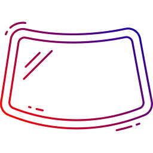

Remplacement de Pare-brise
Spécialistes du remplacement de pare-brise, nous intervenons sur tous types de véhicules avec des verres de qualité d'origine constructeur.
- Verres d'origine constructeur
- Intervention à domicile
- Prise en charge assurance
- Garantie constructeur


Réparation d'Impact
Réparez rapidement les impacts et fissures sur votre pare-brise avant qu'ils ne s'agrandissent. Intervention rapide et économique.
- Réparation en 30 minutes
- Évite le remplacement
- Résultat quasi invisible
- Prix économique


Vitres Latérales
Remplacement de vitres latérales avant et arrière, avec ou sans mécanisme lève-vitre. Intervention rapide et professionnelle.
- Toutes marques de véhicules
- Vitres teintées disponibles
- Réparation mécanisme
- Intervention rapide


Lunette Arrière
Remplacement de lunette arrière chauffante ou non, avec raccordement électrique et test de fonctionnement.
- Lunette chauffante
- Raccordement électrique
- Test de fonctionnement
- Étanchéité garantie